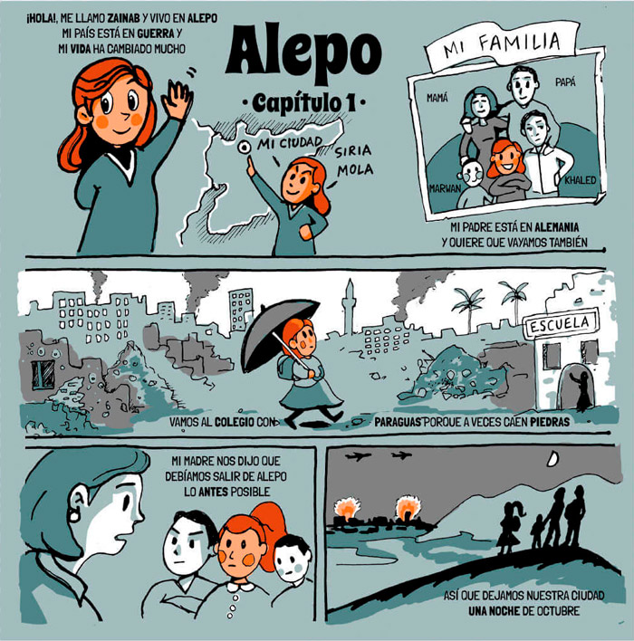
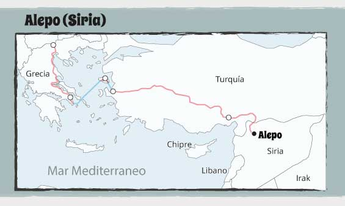
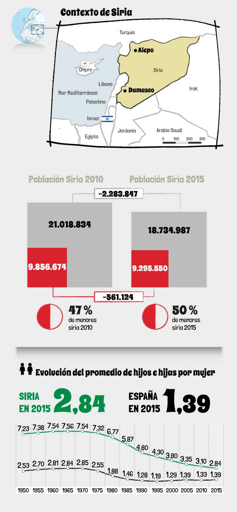

Este cómic quiere visibilizar el éxodo de Zainab y su familia que, como otros 11 millones de personas, se han visto obligadas a abandonar su hogar desde que en 2011 comenzó la guerra en Siria.



Este proyecto se ha realizado durante Visualizar'17, un proceso de investigación participativo sobre visualización de información y migraciones.
Los datos entran en acción para contar una historia. Y si a menudo es difícil obtener datos fiables, en un contexto de guerra todas las cifras se convierten en estimaciones.
No por ello dejan de representar una realidad que están viviendo millones de personas tratadas como números.
Aquí tratamos a los números como personas.